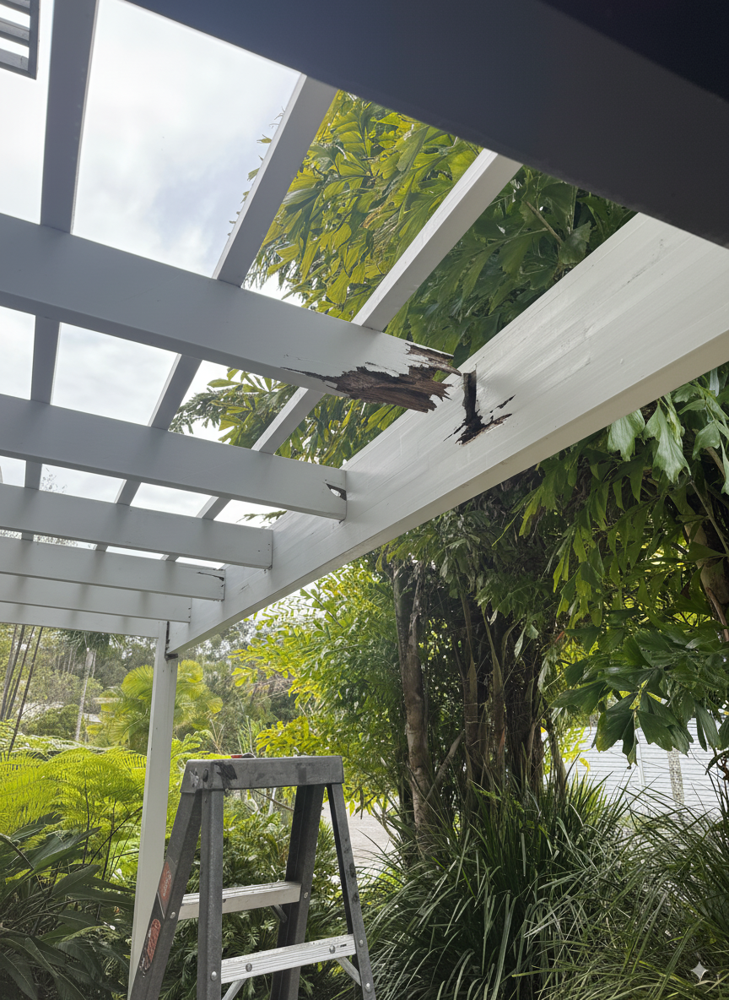
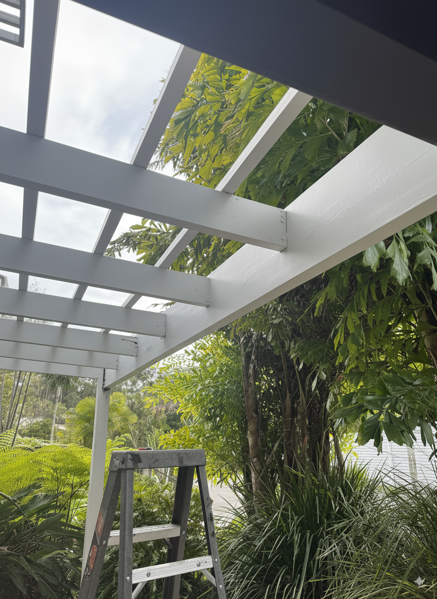

Byron Bay Timber Rescues
Real projects where proper coastal repair made all the difference
Suffolk Park Fascia Board Repair
Before: Deteriorated Fascia
After: Professional Repair

The Problem: Homeowner wanted to sell but couldn't get buyers through the door - the rotting fascia boards across the front of the house were putting people off before they even got inside.
The Solution: Complete fascia board replacement across the whole front of the house. Removed all deteriorated timber, installed new H4 treated boards, and finished with quality coastal-grade paint.
"Dan transformed the front of our house in just a few days. What was putting buyers off became a selling point. Best Contact for quote we ever spent." - Homeowner, Suffolk Park
Ballina Pergola Rot Repair
Before: Rot Repair
After: Professional Repair
The Problem: Pergola had rot structural issues at the joints and joists. Multiple connection points compromised, affecting the integrity of the family entertainment area.
The Solution: Removed and replaced all rotted structural elements at joints and joists. Used H4 treated timber for long-term coastal durability.
"Dan identified exactly what needed replacing and what could stay. Professional job at a fair price." - Roberts Family, Ballina